library(readr)
library(dplyr)
library(ggplot2)
library(gtsummary)
library(here)
nhanes <- read_csv(here('data', 'mph_nhanes_20241107.csv'))
dictionary <- read_csv(here('data', 'mph_nhanes_20241107_dictionary.csv'))3 Describing and visualising data (Week 7)
Scrolling through a dataset of tens of thousands of participants tells us almost nothing. Twenty rows we can read; twenty thousand we can’t hold in our head at all. Chapter 2 got a dataset of exactly that size into R and confirmed every column had arrived, which isn’t the same as knowing what any of it looks like. Seeing that takes summary statistics and graphs, and building them is the work of this chapter.
Which statistic is the right one depends entirely on the kind of variable in front of us. A mean and an SD describe a continuous variable and say nothing sensible about a categorical one, where a count and a percentage do the job instead. So the types come first here, and the summaries, the plots, and the choice of what to show all follow from getting them right. The chapter’s destination is a ‘Table 1’, the participant-characteristics table that opens most published health research, along with the paragraph of prose that has to go with it.
3.1 Chapter intended learning outcomes
By the end of this chapter you will be able to:
- Classify a variable as nominal, ordinal, binary, count, or continuous, and distinguish its statistical type from the class R has stored it as
- Use
dplyr’sselect(),filter(),mutate(), andarrange()to manipulate a dataset, and produce grouped summaries withgroup_by()andsummarise() - Construct frequency and cross-tabulations using
table()andprop.table() - Build histograms, boxplots, bar charts, and scatterplots using
ggplot2 - Modify a plot’s bin width, scale, and labels, and evaluate the effect on interpretation
- Convert a character variable to a factor using
factor()and set its reference level usingrelevel() - Produce a basic ‘Table 1’ of participant characteristics using
gtsummary::tbl_summary(), and describe it in writing
3.2 The data: nhanes_mph
NHANES is the National Health and Nutrition Examination Survey, run by the National Center for Health Statistics, part of the US Centers for Disease Control and Prevention. It’s designed to describe the health of the US population, and it’s unusual in that it doesn’t just ask people questions. Participants are interviewed at home and then examined in a mobile clinic, where measurements are taken and blood samples drawn. That’s why our data can carry a real measured cholesterol value rather than just a self-report question.
nhanes_mph is a curated extract of it, prepared specifically for this course: 41,765 adults aged 18 to 85, described by 27 variables. Those cover demographics, education, smoking and alcohol, physical activity split by domain, sedentary time, total cholesterol, depression symptoms, and whether the participant died during follow-up. The full list is in the dictionary file, which we read in alongside the data below and use throughout.
3.2.1 One simplification
NHANES is not a simple random sample of Americans. It’s a complex survey. Some groups are deliberately sampled more heavily than others in certain years, and participants are recruited in geographic clusters rather than one at a time. Every participant also carries a survey weight, saying how many people in the population they stand for. Ideally, all of that would go into the calculation, to get an estimate representative of the US population. This course treats nhanes_mph as though it were a simple cohort instead: every participant counts once, and counts the same. That’s a real simplification, and it means the numbers we produce here would not be the right numbers to publish as population estimates. Survey weights will not be covered anywhere in the MPH curriculum, not deferred to Advanced Statistics.
3.3 Variable types
Every variable falls into one of two broad kinds, categorical and numeric.
A categorical variable puts each participant into one of a fixed set of groups. gender and eth are nominal: the categories have no natural order. phq.c, depression classification, is ordinal: normal, mild symptoms, and possible depression run in a genuine order, even though the gap between them isn’t a measured distance. blm.cvd, baseline cardiovascular disease, is binary: a two-category special case of categorical, present or absent, even though in the data it takes the value 0 or 1.
A numeric variable is a number, and numbers come in two shapes that matter differently for analysis. phq, the raw depression symptom score behind phq.c, is a count (sometimes called discrete): whole numbers only, 0 through 6. chol, age, and sed are continuous: any value in a range is possible, 4.7 mmol/L as easily as 4.71.
The variable type decides the summary and the plot. A mean and an SD, or a median and an IQR, describe a continuous variable. A categorical variable, however few its categories, is summarised as a proportion or a frequency table instead: for a binary variable like blm.cvd, the proportion of 1s and the mean of its 0/1 values come out as exactly the same number, but we still call it a proportion, since what it summarises is a category, not a measurement. This book says continuous from here on when that’s specifically what’s meant, not the vaguer numeric, since numeric alone doesn’t say whether a variable is a count or continuous.
3.4 Setup
As in Chapter 2, we read the data with read_csv() from the readr package. We build the file path with here() from the here package. This builds a path from the project folder down to the file, so the code runs on any machine no matter where the project sits. nhanes_mph arrives as two files: the data, and a separate dictionary that describes every variable. Both are plain CSV files, so we read both with read_csv().
This chapter loads one package new to the book: gtsummary, for building tables. dplyr, for manipulating data, was loaded back in Chapter 1, and ggplot2, for plotting, in Chapter 2, so both are already familiar. Installing and loading it are still the two separate actions Chapter 1 distinguished, so if gtsummary isn’t installed already, run this once in the console. You don’t need to put it in the script.
install.packages('gtsummary')After that, the library() calls below are all we need, this session and every session after it.
Running that in your own console prints more than it does on this page. The library() calls announce themselves, and each read_csv() prints the column specification message Chapter 2 unpacked. This book hides both from here on, as both have been explained.
glimpse(), from dplyr, shows every column, its type, and its first few values. It’s useful for checking what actually came in, rather than what we expected to come in.
glimpse(nhanes)Rows: 41,765
Columns: 27
$ SEQN <dbl> 12, 20, 34, 66, 69, 81, 97, 107, 120, 143, 158, 167, 170,…
$ age <dbl> 37, 23, 38, 37, 27, 30, 32, 30, 30, 22, 29, 32, 28, 31, 3…
$ gender <dbl> 1, 2, 2, 1, 1, 1, 1, 2, 2, 2, 1, 2, 1, 2, 2, 1, 1, 2, 2, …
$ eth <dbl> 3, 1, 4, 1, 4, 3, 4, 1, 3, 1, 1, 2, 1, 4, 3, 3, 2, 3, 1, …
$ edu <dbl> 3, 1, 2, 3, 3, 3, 3, 2, 3, 1, 1, 3, 1, 1, 2, 3, 1, 2, 1, …
$ smoking <chr> "Never", "Previous", "Current", "Never", "Never", "Never"…
$ alc_wk <dbl> 0.46029919, 3.00000000, 1.00000000, NA, 2.00000000, 1.000…
$ vpa_w <dbl> NA, NA, NA, NA, NA, NA, NA, NA, NA, NA, NA, NA, NA, NA, N…
$ mpa_w <dbl> NA, NA, NA, NA, NA, NA, NA, NA, NA, NA, NA, NA, NA, NA, N…
$ wal_r <dbl> NA, NA, NA, NA, NA, NA, NA, NA, NA, NA, NA, NA, NA, NA, N…
$ vpa_r <dbl> NA, NA, NA, NA, NA, NA, NA, NA, NA, NA, NA, NA, NA, NA, N…
$ mpa_r <dbl> NA, NA, NA, NA, NA, NA, NA, NA, NA, NA, NA, NA, NA, NA, N…
$ mpa_t <dbl> NA, NA, NA, NA, NA, NA, NA, NA, NA, NA, NA, NA, NA, NA, N…
$ vpa_t <dbl> NA, NA, NA, NA, NA, NA, NA, NA, NA, NA, NA, NA, NA, NA, N…
$ met_w <dbl> NA, NA, NA, NA, NA, NA, NA, NA, NA, NA, NA, NA, NA, NA, N…
$ met_r <dbl> NA, NA, NA, NA, NA, NA, NA, NA, NA, NA, NA, NA, NA, NA, N…
$ met_t <dbl> NA, NA, NA, NA, NA, NA, NA, NA, NA, NA, NA, NA, NA, NA, N…
$ sed <dbl> NA, NA, NA, NA, NA, NA, NA, NA, NA, NA, NA, NA, NA, NA, N…
$ chol <dbl> 4.03, 3.75, 5.04, 5.56, 5.66, 8.90, NA, 3.57, 6.57, 6.67,…
$ phq <dbl> 0, 0, NA, 0, 0, 0, 0, 0, 0, 0, 0, NA, 0, NA, 2, 0, 0, 0, …
$ phq.c <chr> "0 Normal", "0 Normal", NA, "0 Normal", "0 Normal", "0 No…
$ blm.cvd <dbl> 0, 0, 0, 0, 0, 0, 0, 0, 0, 0, 0, 0, 0, 0, 0, 0, 0, 0, 0, …
$ dth <dbl> 0, 0, 0, 0, 0, 0, 0, 0, 0, 1, 0, 0, 0, 0, 0, 0, 0, 0, 0, …
$ lcod <chr> NA, NA, NA, NA, NA, NA, NA, NA, NA, "hrt", NA, NA, NA, NA…
$ ucod_dm <dbl> NA, NA, NA, NA, NA, NA, NA, NA, NA, 0, NA, NA, NA, NA, NA…
$ ucod_ht <dbl> NA, NA, NA, NA, NA, NA, NA, NA, NA, 0, NA, NA, NA, NA, NA…
$ fu_month <dbl> 236, 245, 244, 238, 245, 243, 242, 243, 247, 231, 235, 24…Six columns describe a category but aren’t usable as one yet: gender, eth, edu, smoking, phq.c, and blm.cvd. glimpse() reports how R has stored each column, which is a different question from what the variable statistically is. blm.cvd is binary, so categorical, but R read its 0s and 1s as numbers and lists it as <dbl>; gender and edu are the same, plain integers standing in for a label. smoking and phq.c are categorical too, just stored as text: glimpse() lists both as <chr>, not numbers at all. Whichever way R happened to store a column, the variable’s statistical type doesn’t change, and R can’t infer one from the other just by looking at it. Whatever the raw form, we should consult the data documentation, e.g. the data dictionary, whenever possible.
dictionary |>
filter(`Variable names` %in% c('gender', 'eth', 'edu', 'smoking', 'phq.c', 'blm.cvd'))# A tibble: 6 × 2
`Variable names` Description
<chr> <chr>
1 gender Gender (1=Male; 2=Female)
2 eth Ethnicity (1=Mexican; 2=Other Hispanic; 3=White; 4=Black…
3 edu Educaton (1=Less than high school; 2=high school graduat…
4 smoking Smoking status (Never/Previous/Current)
5 phq.c Depression classification - PHQ-2 (0 Normal/1 Mild sympt…
6 blm.cvd Baseline CVD (0=No; 1=Yes) The dictionary gives a numeric code against each category for gender, eth, edu, and blm.cvd: 1=Male; 2=Female, and so on. Those are the four we have to translate. For smoking and phq.c it just lists the categories, and glimpse() already told us why no translation is needed: they don’t arrive as bare numbers at all. smoking is already the text ‘Never’, ‘Previous’, or ‘Current’. phq.c is already a label too, with the original code number kept at the front of the string, for example '0 Normal'. The dictionary isn’t exhaustive, either. dth, the death indicator we use in Chapter 7, has not had a coding given to it. But by programming convention, 0 is no (or the logical FALSE), and 1 is yes (or the logical TRUE).
We turn every one of the six into a factor with mutate() and factor(), whether the raw values are numbers or text. factor() takes the raw values (levels) and the labels we want to give them (labels), in matching order. The labels are ours to choose, and we take one small liberty below: the dictionary abbreviates eth‘s first category to ’Mexican’, and we write it out as ‘Mexican American’, the full NHANES category name. One of the six, phq.c, is ordinal: its categories run from normal to possible depression in a natural order, so we build it with ordered = TRUE. gender, eth, smoking, and blm.cvd are nominal, with no natural order, so they’re plain factors for the more familiar reason. By default, the first level listed becomes the reference level, the category everything else gets compared against. The next section says more about what that means and why it’s set deliberately.
nhanes <- nhanes |>
mutate(
gender = factor(gender,
levels = c(1, 2),
labels = c('Male', 'Female')),
eth = factor(eth,
levels = c(1, 2, 3, 4, 5),
labels = c('Mexican American', 'Other Hispanic', 'White', 'Black', 'Others')),
edu = factor(edu,
levels = c(1, 2, 3),
labels = c('Less than high school', 'High school graduate', 'Above high school')),
smoking = factor(smoking,
levels = c('Never', 'Previous', 'Current')),
phq.c = factor(phq.c,
levels = c('0 Normal', '1 Mild symptoms', '2 Possible depression'),
labels = c('Normal', 'Mild symptoms', 'Possible depression'),
ordered = TRUE),
blm.cvd = factor(blm.cvd,
levels = c(0, 1),
labels = c('No', 'Yes'))
)
glimpse(nhanes)Rows: 41,765
Columns: 27
$ SEQN <dbl> 12, 20, 34, 66, 69, 81, 97, 107, 120, 143, 158, 167, 170,…
$ age <dbl> 37, 23, 38, 37, 27, 30, 32, 30, 30, 22, 29, 32, 28, 31, 3…
$ gender <fct> Male, Female, Female, Male, Male, Male, Male, Female, Fem…
$ eth <fct> White, Mexican American, Black, Mexican American, Black, …
$ edu <fct> Above high school, Less than high school, High school gra…
$ smoking <fct> Never, Previous, Current, Never, Never, Never, Previous, …
$ alc_wk <dbl> 0.46029919, 3.00000000, 1.00000000, NA, 2.00000000, 1.000…
$ vpa_w <dbl> NA, NA, NA, NA, NA, NA, NA, NA, NA, NA, NA, NA, NA, NA, N…
$ mpa_w <dbl> NA, NA, NA, NA, NA, NA, NA, NA, NA, NA, NA, NA, NA, NA, N…
$ wal_r <dbl> NA, NA, NA, NA, NA, NA, NA, NA, NA, NA, NA, NA, NA, NA, N…
$ vpa_r <dbl> NA, NA, NA, NA, NA, NA, NA, NA, NA, NA, NA, NA, NA, NA, N…
$ mpa_r <dbl> NA, NA, NA, NA, NA, NA, NA, NA, NA, NA, NA, NA, NA, NA, N…
$ mpa_t <dbl> NA, NA, NA, NA, NA, NA, NA, NA, NA, NA, NA, NA, NA, NA, N…
$ vpa_t <dbl> NA, NA, NA, NA, NA, NA, NA, NA, NA, NA, NA, NA, NA, NA, N…
$ met_w <dbl> NA, NA, NA, NA, NA, NA, NA, NA, NA, NA, NA, NA, NA, NA, N…
$ met_r <dbl> NA, NA, NA, NA, NA, NA, NA, NA, NA, NA, NA, NA, NA, NA, N…
$ met_t <dbl> NA, NA, NA, NA, NA, NA, NA, NA, NA, NA, NA, NA, NA, NA, N…
$ sed <dbl> NA, NA, NA, NA, NA, NA, NA, NA, NA, NA, NA, NA, NA, NA, N…
$ chol <dbl> 4.03, 3.75, 5.04, 5.56, 5.66, 8.90, NA, 3.57, 6.57, 6.67,…
$ phq <dbl> 0, 0, NA, 0, 0, 0, 0, 0, 0, 0, 0, NA, 0, NA, 2, 0, 0, 0, …
$ phq.c <ord> Normal, Normal, NA, Normal, Normal, Normal, Normal, Norma…
$ blm.cvd <fct> No, No, No, No, No, No, No, No, No, No, No, No, No, No, N…
$ dth <dbl> 0, 0, 0, 0, 0, 0, 0, 0, 0, 1, 0, 0, 0, 0, 0, 0, 0, 0, 0, …
$ lcod <chr> NA, NA, NA, NA, NA, NA, NA, NA, NA, "hrt", NA, NA, NA, NA…
$ ucod_dm <dbl> NA, NA, NA, NA, NA, NA, NA, NA, NA, 0, NA, NA, NA, NA, NA…
$ ucod_ht <dbl> NA, NA, NA, NA, NA, NA, NA, NA, NA, 0, NA, NA, NA, NA, NA…
$ fu_month <dbl> 236, 245, 244, 238, 245, 243, 242, 243, 247, 231, 235, 24…The blank and missing values in smoking, edu, phq.c, and blm.cvd have become NA in the process, just as they were before recoding. factor() relabels the values that are present and carries missingness through unchanged. From here on, every chapter opens with a short setup chunk that repeats these same steps, so each chapter stands on its own.
3.5 Checking and setting a reference level
The reference level decides which category a table or a chart reads everything else against. It’s a reporting choice before it’s a modelling one, so we set it deliberately from here, not only once a categorical predictor enters a regression model in Chapter 6. Let’s examine the levels in a factor. levels(), from base R, lists a factor’s categories in their current order:
levels(nhanes$smoking)[1] "Never" "Previous" "Current" 'Never' is first, so 'Never' is the reference. Everything else gets read against it: ‘Previous’ means previous compared with never, and ‘Current’ means current compared with never. That’s the sensible choice here, and it isn’t an accident. It’s what we asked for when we wrote levels = c('Never', 'Previous', 'Current') in the recode above. Change the order in that line and we change the reference.
Sometimes we want a different reference without rebuilding the factor. relevel(), also from base R, takes a factor and moves the level named in ref to the front:
eth_white_ref <- relevel(nhanes$eth, ref = 'White')
levels(eth_white_ref)[1] "White" "Mexican American" "Other Hispanic"
[4] "Black" "Others" 'White' has moved to the front, so it would now be the reference, with the other four groups read against it. The rest keep their order, just shifted along.
Notice we assigned the result to a new object, eth_white_ref, rather than writing it back into nhanes. That’s deliberate. Every chapter in this book rebuilds nhanes with the same recode. If we changed this factor here, this chapter’s nhanes would stop matching the one later chapters build, and a table or model would come out different for no visible reason. When we’re demonstrating something, we work on a copy.
Right now the reference level only decides the order categories appear in a table, or along a bar chart’s axis. Once a categorical predictor enters a regression model in Chapter 6, it decides what every coefficient means.
3.6 Manipulating a dataset: the dplyr verbs
A public health question is almost never about everyone in a dataset at once. Four verbs from dplyr cover most of what we need to get from the raw dataset down to the subgroup, the columns, and the order a question actually asks about.
select() keeps only the named columns:
nhanes |> select(age, gender, sed, chol)# A tibble: 41,765 × 4
age gender sed chol
<dbl> <fct> <dbl> <dbl>
1 37 Male NA 4.03
2 23 Female NA 3.75
3 38 Female NA 5.04
4 37 Male NA 5.56
5 27 Male NA 5.66
6 30 Male NA 8.9
7 32 Male NA NA
8 30 Female NA 3.57
9 30 Female NA 6.57
10 22 Female NA 6.67
# ℹ 41,755 more rowsfilter() keeps only the rows that satisfy a condition. Here, that’s participants under 40:
nhanes |> filter(age < 40)# A tibble: 16,566 × 27
SEQN age gender eth edu smoking alc_wk vpa_w mpa_w wal_r vpa_r
<dbl> <dbl> <fct> <fct> <fct> <fct> <dbl> <dbl> <dbl> <dbl> <dbl>
1 12 37 Male White Abov… Never 0.460 NA NA NA NA
2 20 23 Female Mexican… Less… Previo… 3 NA NA NA NA
3 34 38 Female Black High… Current 1 NA NA NA NA
4 66 37 Male Mexican… Abov… Never NA NA NA NA NA
5 69 27 Male Black Abov… Never 2 NA NA NA NA
6 81 30 Male White Abov… Never 1 NA NA NA NA
7 97 32 Male Black Abov… Previo… NA NA NA NA NA
8 107 30 Female Mexican… High… Never 0.0385 NA NA NA NA
9 120 30 Female White Abov… Previo… NA NA NA NA NA
10 143 22 Female Mexican… Less… Never 0 NA NA NA NA
# ℹ 16,556 more rows
# ℹ 16 more variables: mpa_r <dbl>, mpa_t <dbl>, vpa_t <dbl>, met_w <dbl>,
# met_r <dbl>, met_t <dbl>, sed <dbl>, chol <dbl>, phq <dbl>,
# phq.c <ord>, blm.cvd <fct>, dth <dbl>, lcod <chr>, ucod_dm <dbl>,
# ucod_ht <dbl>, fu_month <dbl>mutate() adds a new column, or changes an existing one, as we already saw above in the recoding step. Here it adds a new column that classifies participants as under or over 65:
nhanes |> mutate(over_65 = age >= 65) |> select(age, over_65)# A tibble: 41,765 × 2
age over_65
<dbl> <lgl>
1 37 FALSE
2 23 FALSE
3 38 FALSE
4 37 FALSE
5 27 FALSE
6 30 FALSE
7 32 FALSE
8 30 FALSE
9 30 FALSE
10 22 FALSE
# ℹ 41,755 more rowsarrange() sorts the rows by a column, lowest to highest by default:
nhanes |> arrange(age)# A tibble: 41,765 × 27
SEQN age gender eth edu smoking alc_wk vpa_w mpa_w wal_r vpa_r
<dbl> <dbl> <fct> <fct> <fct> <fct> <dbl> <dbl> <dbl> <dbl> <dbl>
1 62253 18 Male White <NA> <NA> 0 0 0 0 0.857
2 62311 18 Male White <NA> <NA> 0 0 0.107 0 0.214
3 62455 18 Male Black <NA> <NA> 0 0 0 0 0
4 62598 18 Male Black <NA> <NA> 0.230 0 0 0 0.429
5 62659 18 Male Others <NA> <NA> 0.192 2.86 2.86 0 4.29
6 62833 18 Female White <NA> <NA> NA 0 4 0 0
7 62837 18 Female White <NA> <NA> 0.460 0 0 0 0
8 62925 18 Female White <NA> <NA> 0 0 0 0 0
9 62976 18 Female White <NA> <NA> 0.25 0 0.107 0 0
10 62978 18 Female Mexican … <NA> <NA> 0.690 0 0 0 1.29
# ℹ 41,755 more rows
# ℹ 16 more variables: mpa_r <dbl>, mpa_t <dbl>, vpa_t <dbl>, met_w <dbl>,
# met_r <dbl>, met_t <dbl>, sed <dbl>, chol <dbl>, phq <dbl>,
# phq.c <ord>, blm.cvd <fct>, dth <dbl>, lcod <chr>, ucod_dm <dbl>,
# ucod_ht <dbl>, fu_month <dbl>These four combine in a short pipe to answer a real question. For example, who are the ten oldest current smokers in the sample?
nhanes |>
filter(smoking == 'Current') |>
arrange(desc(age)) |>
select(age, gender, smoking) |>
slice(1:10)# A tibble: 10 × 3
age gender smoking
<dbl> <fct> <fct>
1 85 Female Current
2 85 Female Current
3 84 Female Current
4 84 Male Current
5 84 Female Current
6 83 Male Current
7 82 Male Current
8 82 Male Current
9 81 Male Current
10 81 Female Currentdesc() reverses the sort order. slice(), also from dplyr, keeps only the rows at the given positions. Here, that’s the first ten after sorting.
3.7 Grouped summaries
group_by() splits a dataset into groups without changing how it looks. summarise() then collapses each group down to one row of statistics. Used together, they answer questions like this: what’s average cholesterol, separately for men and women?
nhanes |>
filter(!is.na(gender), !is.na(chol)) |>
group_by(gender) |>
summarise(
mean_chol = mean(chol, na.rm = TRUE),
sd_chol = sd(chol, na.rm = TRUE),
median_chol = median(chol, na.rm = TRUE),
q1_chol = quantile(chol, probs = 0.25, na.rm = TRUE),
q3_chol = quantile(chol, probs = 0.75, na.rm = TRUE),
n = n()
)# A tibble: 2 × 7
gender mean_chol sd_chol median_chol q1_chol q3_chol n
<fct> <dbl> <dbl> <dbl> <dbl> <dbl> <int>
1 Male 4.89 1.09 4.81 4.14 5.53 18867
2 Female 5.05 1.08 4.97 4.29 5.69 20309filter() here takes two conditions separated by a comma, which means the same as &: a row only stays if both are true. That’s a shorter way to write filter(!is.na(gender) & !is.na(chol)), and it’s the form used throughout this book whenever several conditions apply at once.
Four of those functions are new. mean() we already met in Chapter 1. sd(), from base R, returns the standard deviation: a measure of how spread out the values are, in the same units as the variable itself. median(), also base R, returns the middle value once everything is sorted, so half the participants sit below it and half above. quantile(), also base R, calculates any quantile we ask for: probs = 0.25 and probs = 0.75 ask for the first and third quartile, the two values the interquartile range sits between. There’s a separate function, IQR(), that returns just the gap between them as a single number, in the same units as the variable itself, instead of the two quartiles. We’ll use it in the worked example below.
na.rm = TRUE tells the functions to drop missing values before calculating. Without it, any NA in a column makes the whole result NA. The filter() step above drops rows where gender or chol itself is missing, so the group sizes reported in n reflect exactly the rows the means are calculated from. n(), used inside summarise(), counts the rows in each group.
The gender half of that filter turns out to change nothing: every participant in this extract has a gender recorded. The chol half of the same filter is doing real work: 2,589 participants have no cholesterol value, and without it they’d be counted in n while contributing nothing to the mean.
Whether we report the mean and SD or the median and IQR depends on shape. A skewed distribution gets misrepresented by a mean, because the mean gets pulled toward the tail. A rule of thumb is to look at the shape before choosing. We’ll build the plot we need for that in a moment, but categorical variables need a different kind of summary first: a count, not a mean.
3.8 Frequency and cross-tabulations
table(), from base R, counts how many rows fall into each category of a variable. Given one variable, it produces a frequency table:
table(nhanes$smoking)
Never Previous Current
23394 9468 8580 table() drops NA values by default, not counting them as their own category, so this count is out of everyone with a recorded smoking status, not out of everyone in the dataset. Raw counts are hard to compare across groups of different sizes, so we usually want percentages instead. prop.table(), also from base R, takes a table and turns its counts into proportions of the total:
table(nhanes$smoking) |> prop.table()
Never Previous Current
0.5644998 0.2284639 0.2070363 Multiplying by 100 and rounding turns those proportions into percentages, in whatever way is easiest to read.
Giving table() two variables instead of one produces a cross-tabulation: a two-way table with one variable’s categories as rows and the other’s as columns, one cell per combination. Here’s smoking status by gender:
smoking_gender <- table(nhanes$smoking, nhanes$gender)
smoking_gender
Male Female
Never 9302 14092
Previous 5704 3764
Current 4913 3667The rows are smoking, the columns are gender, because that’s the order the two variables were given to table() in. As with the frequency table above, raw counts are easier to compare as percentages, but now there’s a choice to make: percentage of what? prop.table() takes a margin argument for this. margin = 1 divides each row by its own row total, giving row percentages, the breakdown of gender within each smoking category:
prop.table(smoking_gender, margin = 1)
Male Female
Never 0.3976233 0.6023767
Previous 0.6024504 0.3975496
Current 0.5726107 0.4273893margin = 2 divides each column by its own column total instead, giving column percentages, the breakdown of smoking status within each gender:
prop.table(smoking_gender, margin = 2)
Male Female
Never 0.4669913 0.6547414
Previous 0.2863598 0.1748827
Current 0.2466489 0.1703759Both tables are built from the same counts, but they answer different questions, and the research question decides which one belongs in a report. This is the same two-by-two logic the epidemiology half already uses for exposure-by-outcome tables, just with more than two categories on one side.
3.9 Plotting with ggplot2
Every ggplot2 plot is built from the same three pieces: the data, the aesthetic mapping (aes(), which decides which variables go on which axis or colour), and the geometry (geom_*(), which decides what kind of shape represents the data). These pieces are joined with +, not the pipe |> we’ve been using so far, because + does a different job. x() |> y() passes the output of x() as an input to y(). + in ggplot2 means layering instead, an idea introduced by Leland Wilkinson’s book The Grammar of Graphics: a plot is built as layers stacked on top of one another, data first (ggplot(nhanes, ...) below), then the aesthetic mapping (aes(x = sed) below), then the geometry (geom_histogram() below).
ggplot(nhanes, aes(x = sed)) +
geom_histogram(binwidth = 1) +
labs(x = 'Sedentary time (hours/day)', y = 'Count')Warning: Removed 7331 rows containing non-finite outside the scale range
(`stat_bin()`).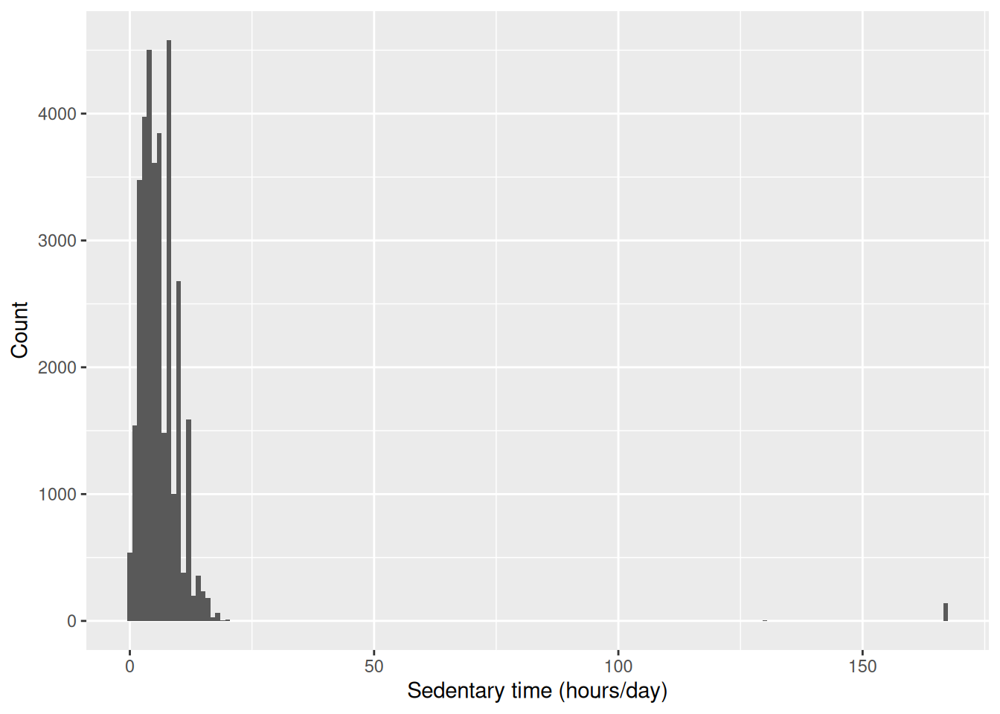
ggplot() names the data and the mapping, geom_histogram() says to draw it as a histogram, and labs() sets the axis labels. Use labs() every time: left out, the axes are labelled with the raw column name, so this one would have read sed instead of ‘Sedentary time (hours/day)’, and anyone outside the course would have to guess what that means.
That warning about removed rows is the one Chapter 2 explained: sed has 7,331 missing values, so ggplot2 left them out and said so. It will appear above most plots in this chapter, with a different number each time depending on the variable. Glance at the number, check it’s the size we expect, and carry on.
ggplot2 is highly versatile and can produce nearly any plot we need. Some examples below:
A bar chart of smoking status:
ggplot(nhanes |> filter(!is.na(smoking)), aes(x = smoking)) +
geom_bar() +
labs(x = 'Smoking status', y = 'Count')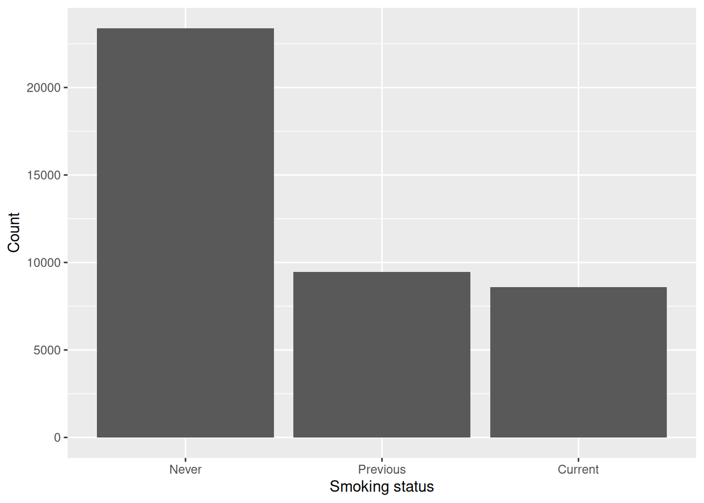
geom_bar() is like a histogram for a categorical variable, another way to represent the frequency table we built above. The code is very similar.
A boxplot of cholesterol by gender:
ggplot(nhanes |> filter(!is.na(gender)), aes(x = gender, y = chol)) +
geom_boxplot() +
labs(x = 'Gender', y = 'Total cholesterol (mmol/L)')Warning: Removed 2589 rows containing non-finite outside the scale range
(`stat_boxplot()`).
This is useful for examining the relationship between a continuous variable and a categorical one. The code is similar, but with two differences: it explicitly filters out participants with missing gender, and it names both the x and y axis variables. geom_boxplot() replaces the geom_histogram() from above.
A scatterplot of cholesterol against age:
ggplot(nhanes, aes(x = age, y = chol)) +
geom_point(alpha = 0.1) +
labs(x = 'Age (years)', y = 'Total cholesterol (mmol/L)')Warning: Removed 2589 rows containing missing values or values outside the scale
range (`geom_point()`).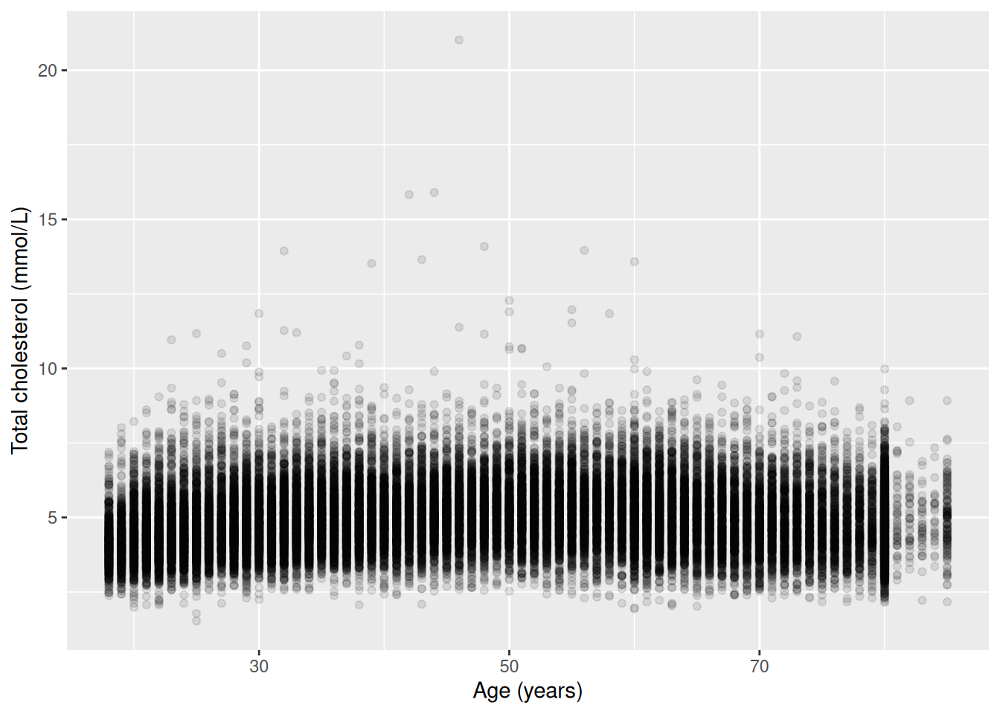
geom_point() is useful to examine the relationship between two continuous variables. alpha = 0.1 makes each point mostly transparent. Where thousands of points overlap, the darker regions show where the data are dense. A plain scatterplot of this many points would otherwise just be a solid block of ink.
NoteTry it yourself: bin width and scale
Take the histogram of sed above. Change binwidth to 0.1, then to 5, and re-run it each time. Then add + ylim(0, 500) to the original plot. ylim(), from ggplot2, fixes the lower and upper limits of the y-axis by hand instead of letting the plot choose them to fit the data. Be careful with it: anything falling outside the limits you set is dropped from the plot altogether rather than being drawn cut off at the edge, so a bar taller than the limit doesn’t get shortened, it disappears. For each change, write one sentence on what altered in the plot, and one sentence on what the data themselves did not change. This is the same distinction the seminar drew between a plot design choice and the underlying distribution.
This is the first of several ‘Try it yourself’ boxes in the book, and none of them has a written solution. Running the code is the answer.
3.10 A first Table 1
A ‘Table 1’ is a common first table in a health research report. It shows participant characteristics, often split by a grouping variable. We could do it manually with the descriptive statistics commands above (e.g. mean(), table()) and it is a good exercise. However, the more convenient way is to use tbl_summary(), from gtsummary.
The code below creates the summary table overall for the five selected variables.
nhanes |>
select(age, gender, eth, smoking, chol) |>
tbl_summary()| Characteristic | N = 41,7651 |
|---|---|
| age | 46 (31, 63) |
| gender | |
| Male | 20,085 (48%) |
| Female | 21,680 (52%) |
| eth | |
| Mexican American | 6,849 (16%) |
| Other Hispanic | 3,893 (9.3%) |
| White | 17,297 (41%) |
| Black | 9,086 (22%) |
| Others | 4,640 (11%) |
| smoking | |
| Never | 23,394 (56%) |
| Previous | 9,468 (23%) |
| Current | 8,580 (21%) |
| Unknown | 323 |
| chol | 4.89 (4.22, 5.61) |
| Unknown | 2,589 |
| 1 Median (Q1, Q3); n (%) | |
Adding by = splits the table by a grouping variable, giving one column per group:
nhanes |>
select(age, gender, eth, smoking, chol) |>
tbl_summary(by = gender)| Characteristic | Male N = 20,0851 |
Female N = 21,6801 |
|---|---|---|
| age | 47 (32, 63) | 45 (31, 62) |
| eth | ||
| Mexican American | 3,284 (16%) | 3,565 (16%) |
| Other Hispanic | 1,717 (8.5%) | 2,176 (10%) |
| White | 8,482 (42%) | 8,815 (41%) |
| Black | 4,339 (22%) | 4,747 (22%) |
| Others | 2,263 (11%) | 2,377 (11%) |
| smoking | ||
| Never | 9,302 (47%) | 14,092 (65%) |
| Previous | 5,704 (29%) | 3,764 (17%) |
| Current | 4,913 (25%) | 3,667 (17%) |
| Unknown | 166 | 157 |
| chol | 4.81 (4.14, 5.53) | 4.97 (4.29, 5.69) |
| Unknown | 1,218 | 1,371 |
| 1 Median (Q1, Q3); n (%) | ||
tbl_summary()’s default display for a continuous variable is the median and IQR. To change it to mean and SD, we tell it what statistic to use with the statistic argument:
nhanes |>
select(age, gender, eth, smoking, chol) |>
tbl_summary(
by = gender,
statistic = list(all_continuous() ~ '{mean} ({sd})')
)| Characteristic | Male N = 20,0851 |
Female N = 21,6801 |
|---|---|---|
| age | 48 (19) | 47 (18) |
| eth | ||
| Mexican American | 3,284 (16%) | 3,565 (16%) |
| Other Hispanic | 1,717 (8.5%) | 2,176 (10%) |
| White | 8,482 (42%) | 8,815 (41%) |
| Black | 4,339 (22%) | 4,747 (22%) |
| Others | 2,263 (11%) | 2,377 (11%) |
| smoking | ||
| Never | 9,302 (47%) | 14,092 (65%) |
| Previous | 5,704 (29%) | 3,764 (17%) |
| Current | 4,913 (25%) | 3,667 (17%) |
| Unknown | 166 | 157 |
| chol | 4.89 (1.09) | 5.05 (1.08) |
| Unknown | 1,218 | 1,371 |
| 1 Mean (SD); n (%) | ||
Three things in that line are new. list(), from base R, bundles several settings together, one per variable or group of variables, which is what statistic needs when there’s more than one display rule to give. all_continuous(), from gtsummary, means ‘every continuous variable in this table’, so one line covers both age and chol at once rather than naming each separately. The ~ between it and the text that follows just pairs the two: which variables, and what to show for them. This book properly introduces ~ as formula syntax in Chapter 4; here it’s doing a related but different job, pairing a selection with a display rule rather than an outcome with a predictor. And '{mean} ({sd})' is a piece of text with slots in it. gtsummary works out the mean and the standard deviation for each variable, then drops each number into the spot where its name appears in curly braces. It comes out as something like 47.3 (18.1). Everything outside the braces, here a space and a pair of round brackets, is printed exactly as written. tbl_summary() is highly customisable. We can change the statistic for any specific variable, or format different variables differently. That’s outside the scope of this course, and left as an exploration exercise for anyone interested.
3.11 Worked example: describing age
How old are the participants in this sample, and how much does that vary? age hasn’t come up elsewhere in this chapter, so it’s a clean place to put everything above to work at once.
nhanes |>
summarise(
mean_age = mean(age, na.rm = TRUE),
sd_age = sd(age, na.rm = TRUE),
median_age = median(age, na.rm = TRUE),
iqr_age = IQR(age, na.rm = TRUE)
)# A tibble: 1 × 4
mean_age sd_age median_age iqr_age
<dbl> <dbl> <dbl> <dbl>
1 47.5 18.5 46 32ggplot(nhanes, aes(x = age)) +
geom_histogram(binwidth = 5) +
labs(x = 'Age (years)', y = 'Count')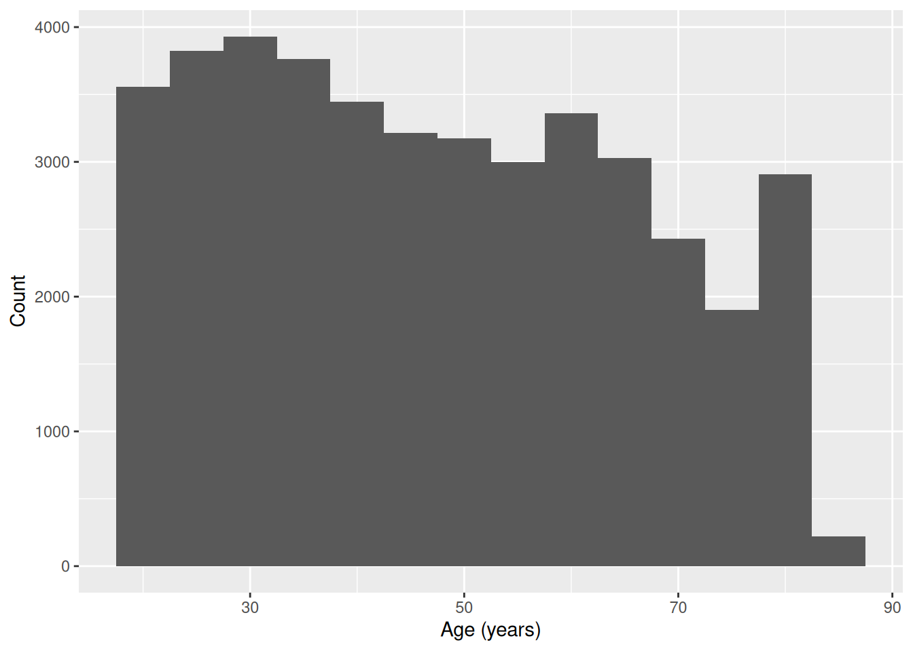
The histogram is close to symmetric, with no strong tail in either direction. So the mean and SD are a fair summary here. Median and IQR would tell much the same story. Now let’s split by gender:
ggplot(nhanes |> filter(!is.na(gender)), aes(x = gender, y = age)) +
geom_boxplot() +
labs(x = 'Gender', y = 'Age (years)')
nhanes |>
select(age, gender) |>
tbl_summary(by = gender)| Characteristic | Male N = 20,0851 |
Female N = 21,6801 |
|---|---|---|
| age | 47 (32, 63) | 45 (31, 62) |
| 1 Median (Q1, Q3) | ||
Age looks similar across the two gender groups, both in the boxplot and in the Table 1. There’s no obvious difference to report here, and it would be wrong to manufacture one.
3.12 Exercises
Exercise 1 (ILO 2). Using the four dplyr verbs, and a pipe, answer this: among participants aged 65 or over who have never smoked, what are the ten highest cholesterol values? Keep only age, gender, and chol in your answer. Then add a column called chol_high that is TRUE when chol is above 6 mmol/L and FALSE otherwise.
Exercise 2 (ILOs 2, 4). Describe the distribution of sedentary time (sed). Report the mean and SD or the median and IQR, whichever the shape justifies, and support your choice with a histogram and a boxplot. Then produce a scatterplot of chol against sed, label both axes with their units, and write one sentence on whether the plot suggests any relationship between the two.
Exercise 3 (ILOs 4, 5). Build a histogram of total cholesterol (chol) with a binwidth of 0.5, labelled properly with labs(). Then produce two more versions of it: one with a binwidth of 0.05, and one with the original bin width but with + ylim(0, 1000) added. Write one sentence for each of the two changes saying what it does to the impression the plot gives, and one sentence saying which of the three you would put in a report and why.
Exercise 4 (ILOs 2, 4, 6). Compare total cholesterol (chol) by gender. Produce a grouped summary and a boxplot, and write one sentence comparing the two groups. Then use levels() to state which gender is currently the reference level, and relevel() to make the other one the reference instead, assigning the result to a new object rather than overwriting nhanes.
Exercise 5 (ILOs 3, 6, 7). Produce a Table 1 of age, gender, eth, smoking, and chol, stratified by depression classification (phq.c).
Exercise 6 (ILOs 3, 4). Build a cross-tabulation of smoking status (smoking) against education (edu) with table(). Produce both the row percentages and the column percentages with prop.table().
Then answer this question using whichever of the two is appropriate: among people who never smoked, how is education distributed? State which of your two tables answers it, and say in one sentence why the other one doesn’t. Finally, produce a bar chart of edu, labelled properly.
3.13 Writing exercise
Every chapter in this book ends with one of these. The course’s assessment is a structured paper on a dataset you haven’t seen, where every question asks for an analysis and an interpretation, so these exercises can be treated as formative assessments.
Using the Table 1 from Exercise 5, write a short paragraph of a maximum of 150 words. Describe how participant characteristics differ, or don’t, across the three depression classification groups. State which characteristics look similar across groups and which look different, and avoid overstating a difference the table doesn’t support.
Start by stating how many participants the table is actually based on, and how many were excluded because they had no depression classification recorded. The number is in the message printed above the table.
NoteSolutions
Exercise 1
nhanes |>
filter(age >= 65, smoking == 'Never') |>
arrange(desc(chol)) |>
select(age, gender, chol) |>
slice(1:10)# A tibble: 10 × 3
age gender chol
<dbl> <fct> <dbl>
1 73 Female 11.1
2 70 Female 10.4
3 80 Female 9.98
4 76 Female 9.57
5 73 Female 9.36
6 65 Female 9.13
7 71 Female 9.05
8 71 Female 9.05
9 82 Female 8.92
10 85 Female 8.92The comma inside filter() still means &, both conditions have to be true. Then arrange(desc(chol)) sorts from highest cholesterol down, select() keeps the three columns asked for, and slice(1:10) takes the top ten rows.
The mutate() step is separate, because adding a column to ten hand-picked rows isn’t much use. Applied to the whole dataset it is:
nhanes |>
mutate(chol_high = chol > 6) |>
select(age, chol, chol_high)# A tibble: 41,765 × 3
age chol chol_high
<dbl> <dbl> <lgl>
1 37 4.03 FALSE
2 23 3.75 FALSE
3 38 5.04 FALSE
4 37 5.56 FALSE
5 27 5.66 FALSE
6 30 8.9 TRUE
7 32 NA NA
8 30 3.57 FALSE
9 30 6.57 TRUE
10 22 6.67 TRUE
# ℹ 41,755 more rowschol > 6 is a comparison, exactly like the ones in Chapter 1, and it returns TRUE or FALSE for every row. Participants with no cholesterol value recorded get NA rather than FALSE, which is correct: we don’t know whether they’re above 6, and guessing ‘no’ would be inventing data.
Exercise 2
nhanes |>
summarise(
median_sed = median(sed, na.rm = TRUE),
iqr_sed = IQR(sed, na.rm = TRUE)
)# A tibble: 1 × 2
median_sed iqr_sed
<dbl> <dbl>
1 5 5ggplot(nhanes, aes(x = sed)) +
geom_histogram(binwidth = 1) +
labs(x = 'Sedentary time (hours/day)', y = 'Count')Warning: Removed 7331 rows containing non-finite outside the scale range
(`stat_bin()`).
ggplot(nhanes, aes(x = sed, y = '')) +
geom_boxplot() +
labs(x = 'Sedentary time (hours/day)', y = NULL)Warning: Removed 7331 rows containing non-finite outside the scale range
(`stat_boxplot()`).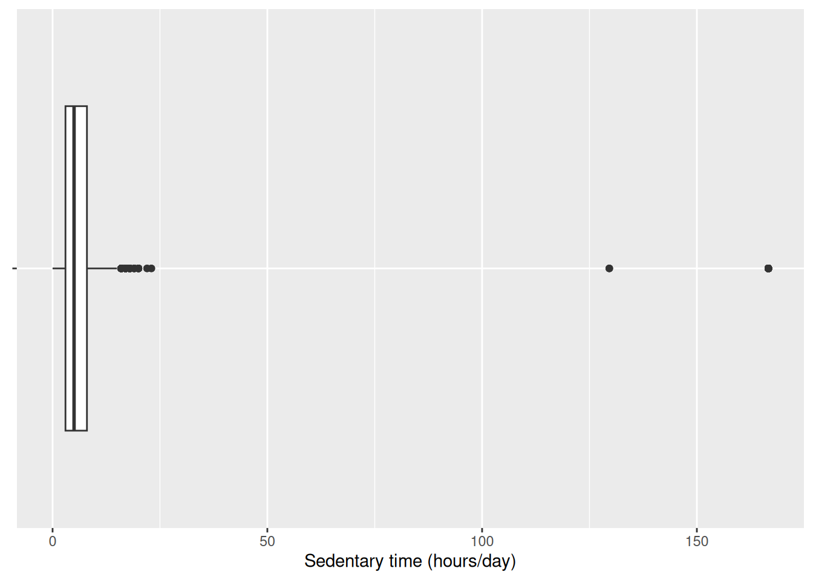
The histogram is right-skewed, with a long tail of participants reporting many hours of sedentary time. So the median and IQR describe it more fairly than the mean and SD would.
ggplot(nhanes, aes(x = sed, y = chol)) +
geom_point(alpha = 0.1) +
labs(x = 'Sedentary time (hours/day)',
y = 'Total cholesterol (mmol/L)')Warning: Removed 9456 rows containing missing values or values outside the scale
range (`geom_point()`).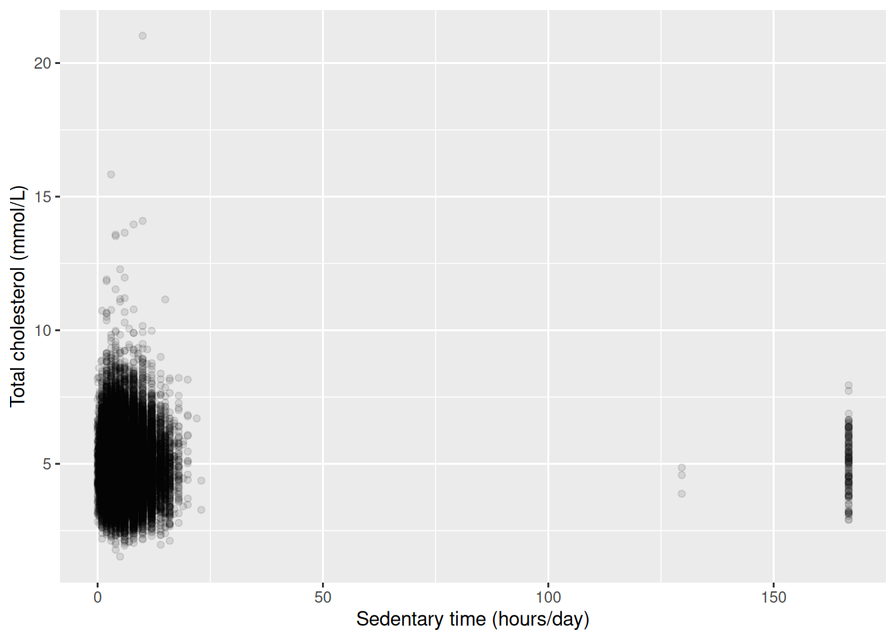
The scatterplot shows no clear relationship. The cloud of points is roughly the same height right across the range of sedentary time, rather than drifting up or down as we move left to right. Whatever else predicts cholesterol here, sedentary time on its own doesn’t look like much of it. Chapter 6 puts a number and a confidence interval on that impression instead of leaving it to the eye.
Exercise 3
ggplot(nhanes, aes(x = chol)) +
geom_histogram(binwidth = 0.5) +
labs(x = 'Total cholesterol (mmol/L)', y = 'Count')Warning: Removed 2589 rows containing non-finite outside the scale range
(`stat_bin()`).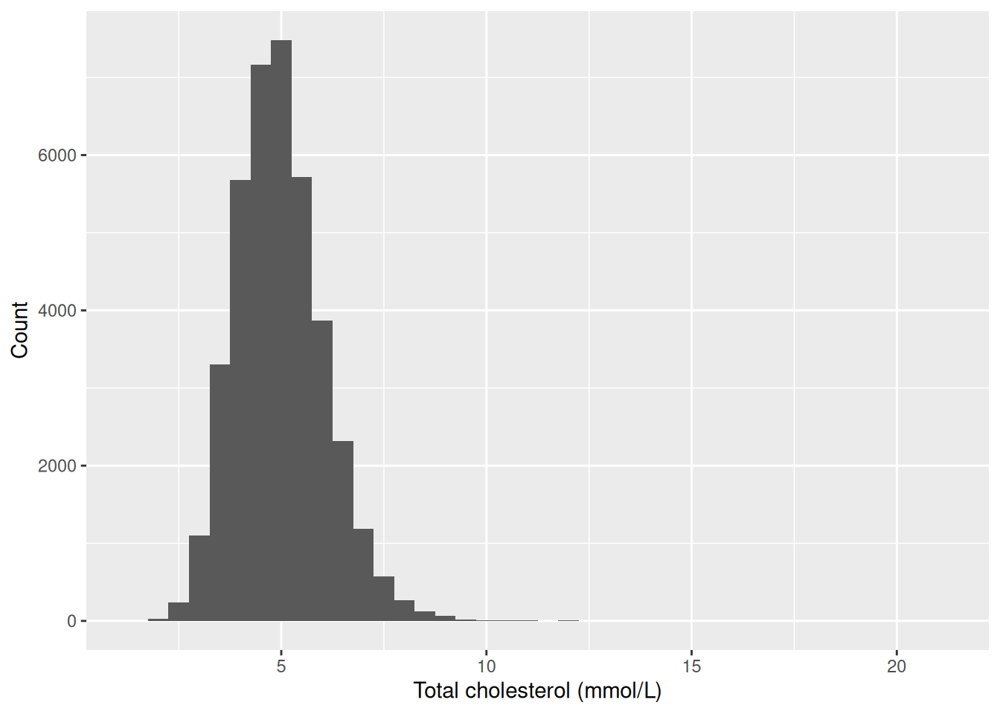
ggplot(nhanes, aes(x = chol)) +
geom_histogram(binwidth = 0.05) +
labs(x = 'Total cholesterol (mmol/L)', y = 'Count')Warning: Removed 2589 rows containing non-finite outside the scale range
(`stat_bin()`).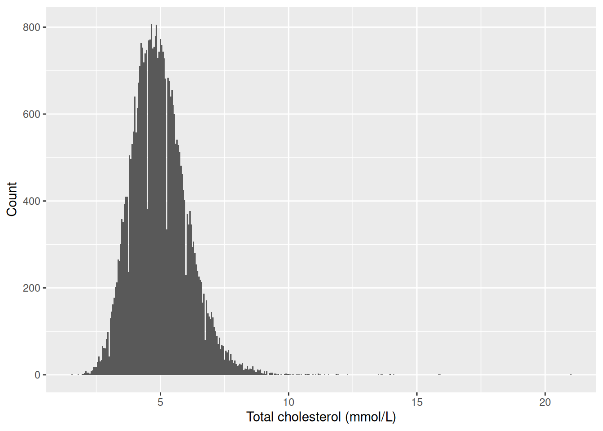
ggplot(nhanes, aes(x = chol)) +
geom_histogram(binwidth = 0.5) +
ylim(0, 1000) +
labs(x = 'Total cholesterol (mmol/L)', y = 'Count')Warning: Removed 2589 rows containing non-finite outside the scale range
(`stat_bin()`).Warning: Removed 9 rows containing missing values or values outside the scale range
(`geom_bar()`).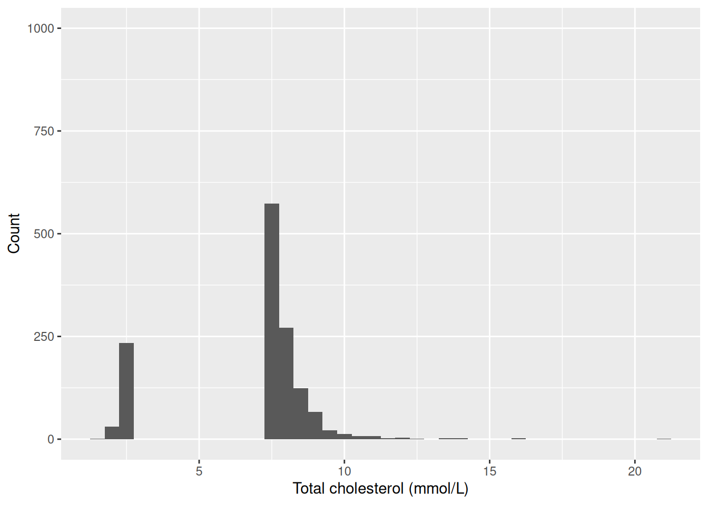
Narrowing the bins to 0.05 breaks the smooth shape into a spiky, gappy outline. Cholesterol is recorded to a limited number of decimal places, so at this bin width many bins fall in the gaps between recorded values and come out empty. Those spikes are an artefact of how the values were written down, not a real feature of cholesterol.
Capping the y-axis at 1,000 does something worse. Every bar taller than 1,000 vanishes from the plot completely. The tallest bar here counts over 7,000 participants, and the whole middle of the distribution is taller than the cap, so what’s left is the two tails with a hole where most of the data should be.
The first version is the one to put in a report. It shows the whole distribution at a bin width where the shape is readable, and it doesn’t drop anything. Notice that all three plots are drawn from exactly the same numbers: nothing about cholesterol changed between them, only the choices we made about how to draw it. That’s the seminar’s point about misleading figures.
Exercise 4
nhanes |>
filter(!is.na(gender)) |>
group_by(gender) |>
summarise(
mean_chol = mean(chol, na.rm = TRUE),
sd_chol = sd(chol, na.rm = TRUE),
n = n()
)# A tibble: 2 × 4
gender mean_chol sd_chol n
<fct> <dbl> <dbl> <int>
1 Male 4.89 1.09 20085
2 Female 5.05 1.08 21680ggplot(nhanes |> filter(!is.na(gender)), aes(x = gender, y = chol)) +
geom_boxplot() +
labs(x = 'Gender', y = 'Total cholesterol (mmol/L)')Warning: Removed 2589 rows containing non-finite outside the scale range
(`stat_boxplot()`).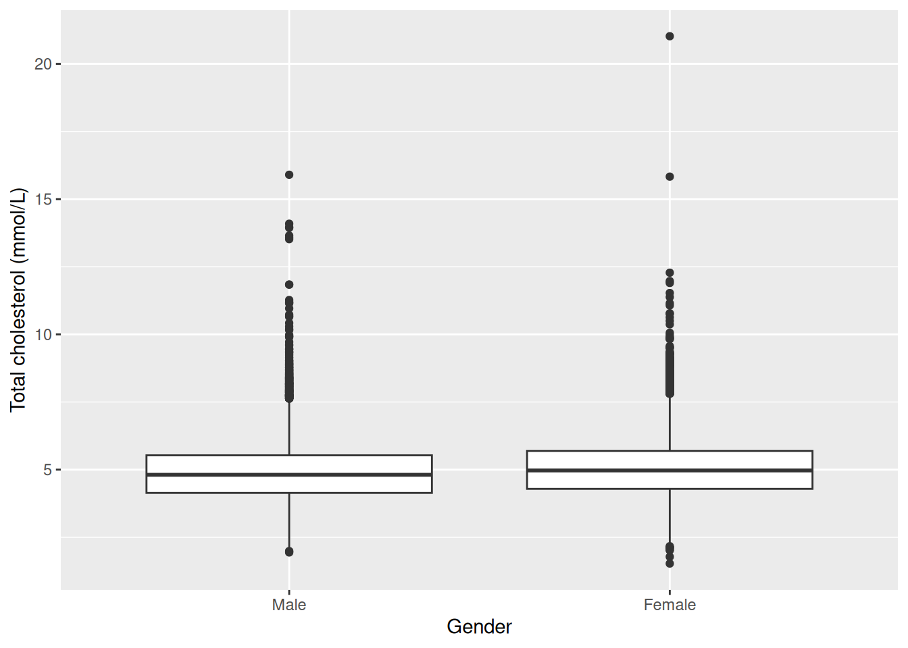
Mean cholesterol is slightly higher in women than in men, and the boxplots overlap substantially. That’s a small difference in the centre, not a separation of the two distributions.
levels(nhanes$gender)[1] "Male" "Female"gender_female_ref <- relevel(nhanes$gender, ref = 'Female')
levels(gender_female_ref)[1] "Female" "Male" 'Male' is listed first, so 'Male' is currently the reference level, which follows from the recode listing the numeric code 1 first and labelling it 'Male'. After relevel(), 'Female' is at the front of the new object and would be the reference instead. nhanes itself is untouched.
Exercise 5
nhanes |>
select(age, gender, eth, smoking, chol, phq.c) |>
tbl_summary(by = phq.c)4499 missing rows in the "phq.c" column have been removed.| Characteristic | Normal N = 25,1781 |
Mild symptoms N = 8,6281 |
Possible depression N = 3,4601 |
|---|---|---|---|
| age | 46 (31, 63) | 46 (30, 61) | 51 (36, 63) |
| gender | |||
| Male | 13,041 (52%) | 3,755 (44%) | 1,406 (41%) |
| Female | 12,137 (48%) | 4,873 (56%) | 2,054 (59%) |
| eth | |||
| Mexican American | 4,102 (16%) | 1,448 (17%) | 564 (16%) |
| Other Hispanic | 2,101 (8.3%) | 917 (11%) | 437 (13%) |
| White | 10,955 (44%) | 3,509 (41%) | 1,348 (39%) |
| Black | 5,304 (21%) | 1,870 (22%) | 828 (24%) |
| Others | 2,716 (11%) | 884 (10%) | 283 (8.2%) |
| smoking | |||
| Never | 14,617 (58%) | 4,546 (53%) | 1,491 (43%) |
| Previous | 5,978 (24%) | 1,894 (22%) | 786 (23%) |
| Current | 4,396 (18%) | 2,090 (25%) | 1,164 (34%) |
| Unknown | 187 | 98 | 19 |
| chol | 4.89 (4.22, 5.61) | 4.89 (4.22, 5.64) | 4.91 (4.22, 5.69) |
| Unknown | 1,251 | 394 | 185 |
| 1 Median (Q1, Q3); n (%) | |||
Notice the message above the table: 4499 missing rows in the 'phq.c' column have been removed. That’s gtsummary telling us something important, not complaining. It isn’t an error, and the table is fine.
What it means is this. We asked for the table split three ways, by phq.c. A participant with no depression classification recorded can’t go in any of the three columns, and tbl_summary() left them out. The table describes the 37,266 who remain.
It matters here more than usual, because this is the table the writing exercise asks you to describe. Describing it as though it covered everybody would overstate what it shows by 4,499 people.
Exercise 6
smoking_edu <- table(nhanes$smoking, nhanes$edu)
smoking_edu
Less than high school High school graduate Above high school
Never 5164 4656 12778
Previous 2405 2221 4811
Current 2707 2504 3284prop.table(smoking_edu, margin = 1)
Less than high school High school graduate Above high school
Never 0.2285158 0.2060359 0.5654483
Previous 0.2548479 0.2353502 0.5098018
Current 0.3186580 0.2947616 0.3865803prop.table(smoking_edu, margin = 2)
Less than high school High school graduate Above high school
Never 0.5025302 0.4963224 0.6121784
Previous 0.2340405 0.2367551 0.2304891
Current 0.2634293 0.2669225 0.1573324The row percentages are the ones that answer the question. smoking was given to table() first, so smoking is the rows, and margin = 1 divides each row by its own total. The ‘Never’ row then reads as the education breakdown within people who never smoked, which is exactly what was asked, and those three numbers add to 100%.
The column percentages answer a different question: within each education group, what share smoke, used to smoke, and never smoked. That’s a perfectly good question, just not this one. Both tables come from the same counts, so neither is more correct than the other in the abstract. What decides it is which total we want the percentages to be a share of, and that comes from the question, not from the data.
ggplot(nhanes |> filter(!is.na(edu)), aes(x = edu)) +
geom_bar() +
labs(x = 'Education', y = 'Count')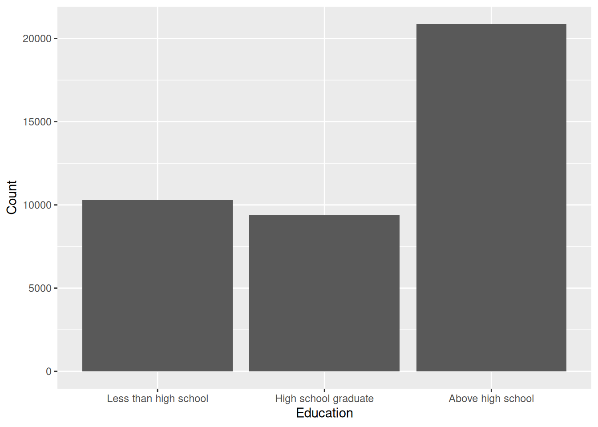
Writing exercise (sample answer)
Depression classification was recorded for 37,266 of the 41,765 participants, with the rest being excluded. Among those classified, age, gender, and ethnicity distributions were broadly similar across the three groups. Current smoking was more common among participants classified with possible depression than among those classified as normal. Mean total cholesterol was similar across all three groups. These are descriptive comparisons only, based on group summaries and counts, not any formal test of difference. Hypothesis tests come in Chapter 5.